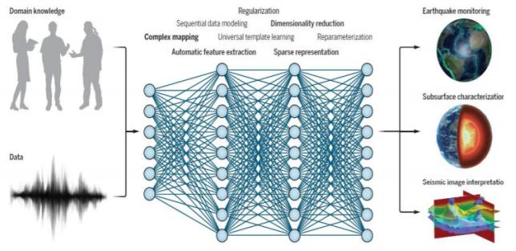
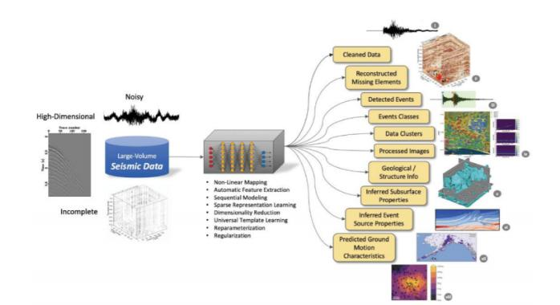

Seismic waves obtained from earthquakes and other sources can be used to infer the internal structure and properties of the Earth. The availability of large-scale seismic datasets and the applicability of deep learning techniques to seismic data processing have propelled deep learning into the forefront of the foundation and long-term research in seismology. However, certain aspects of deep learning applications in seismology may guide Earth science and other broader research fields. While deep learning is a powerful method, there are subtle differences in its application. This study systematically outlines the trends, challenges, and opportunities of deep learning methods in seismology. The relevant findings were published in Science in August 2022.
Seismology, through the study of seismic waves to understand their origin (especially fault sliding), infers the internal structure and properties of the Earth. Typically, thousands of sensor arrays continuously record the three components of seismic ground motion at a typical sampling frequency of 100 points per second. Despite being a data-rich science, seismology is also data-driven, capable of regularly discovering new phenomena. As a data label-rich science, seismology has gradually become fertile ground for deep learning. Deep learning has penetrated almost every subfield of seismology and has shown outstanding performance, such as the development of earthquake catalogs, which can have an order of magnitude more earthquakes than traditional catalogs. Deep learning also demonstrates superior capabilities in other crucial seismological tasks, including distinguishing earthquakes from explosions and other sources, separating earthquake signals from background noise, seismic image processing and interpretation, and Earth model inversion.
Deep learning uses deep neural networks (DNN) to learn complex relationships, discover multi-scale structures and patterns, and obtain advanced representations of data by using stacked neural layers and multiple non-linear transformations to solve ill-posed inverse problems. The capabilities of DNN variants, such as Convolutional Neural Networks (CNN) that extract multi-scale features from data and Recurrent Neural Networks (RNN) that simulate temporal relationships in sequence data, make it a powerful tool in seismology. Deep learning in seismology can handle large volumes of high-fidelity seismic observation data with unprecedented spatiotemporal coverage, leading to new insights and discoveries.
This study systematically reviews deep learning methods in seismology by conducting a meta-analysis of 637 journal papers (published between January 1988 and January 2022) related to the current state of the art. It covers various aspects, including data processing automation, forward and inverse problems, exploratory data analysis, and discussions beyond traditional seismology. Finally, the researchers speculate on future trends and provide recommendations to drive progress.
In passive and active source seismology, there are typically a series of data processing and analysis steps that need to be performed. In many cases, manual processing by skilled analysts remains the most reliable option. The accelerated expansion of seismic data poses new challenges and creates the need for the development of new powerful processing tools through data-driven methods such as deep learning.
(1) Seismic Monitoring: The classification ability of DNN makes it suitable for tasks such as earthquake identification, detection, phase picking, first polarity determination, and phase correlation, which together constitute seismic monitoring tasks. In earthquake identification (such as distinguishing artificial explosions from natural earthquakes), semi-supervised, unsupervised, and transfer learning are needed to compensate for the scarcity of large labeled datasets. In earthquake detection and phase picking, deep learning detectors and phase selectors are considered universal templates for earthquake signals, represented by a set of kernels of different sizes on different layers of neural networks and their connection weights. Practice shows that deep learning models are overall superior to classical feature-based models and have lower computational costs. In the challenging task of picking the S-wave appearing at the tail of the P-wave, the capabilities of AI-based pickers are particularly evident.
(2) Seismic Image Processing: Reflection and refraction seismic waves recorded by seismic sensor arrays are used to image the subsurface geology and structures. Deep learning can be used to improve the quality of seismic images by transforming them into interpretable subsurface images by eliminating data acquisition artifacts and wave propagation effects. Deep learning models are highly effective in suppressing various types and levels of seismic noise with low computational costs. One major challenge is obtaining noise-free signals and noise signals from field recordings. An effective approach is to create semi-synthetic data by combining clean synthetic signals with noise manually selected from field data. Another common approach is to perform unsupervised denoising using autoencoders or Generative Adversarial Networks (GAN).
(3) Seismic Image Interpretation: Interpretation aims to extract useful information about subsurface geology or structures from seismic images with limited resolution and noise pollution. The feature learning and dimensionality reduction capabilities of CNN are suitable for clustering seismic responses based on geological features. In addition to geological interpretation, the powerful capabilities of deep learning in image segmentation and object detection make it a popular choice for structural interpretation. Despite the lack of large, complete, and accurate labeled training datasets, these methods have shown excellent performance in seismic image interpretation, mainly attributed to the widespread use of data augmentation and the generation of complex synthetic data.
The predictive ability of DNN makes it a popular tool for forward modeling problems in seismology, especially in the following three aspects:
(1) Seismic Wave Simulation: Using Physics-Informed Neural Networks (PINN) and GAN is the current trend in simulating seismic waves. In PINN, DNN can be trained to learn the solution of the wave equation for media wave propagation by defining the boundary conditions and wave equation used in the loss function during training. GAN simulators leverage the universal function approximation ability of DNN to learn the probability distribution of training data attributes by optimizing the generator network.
(2) Modeling Seismic Ground Motion Properties: Neural networks have been used to build non-parametric ground motion models (GMM) based on a fixed set of input parameters provided by field or synthetic data. Compared to traditional finite difference methods (especially for complex structures), the spatial and temporal complexity of deep learning-based Eikonal solvers is much lower because they do not require a travel-time lookup table and benefit greatly from deep learning.
(3) Seismic Prediction: The application of deep learning methods in this area more directly combines the complete spatiotemporal structure of seismic catalogs. By leveraging the automatic feature extraction capabilities of some DNNs and their potential to learn dynamic data, old problems can be reexamined. Whether deep learning seismic prediction models provide new insights into seismic predictability and whether they perform better than traditional empirical methods are still to be determined. At present, they offer new opportunities for earthquake prediction by combining different potential precursor data and known seismic physical results with seismic activity data and still unknown fundamental physical features.
Solving typically nonlinear and ill-posed inverse problems is another important aspect of deep learning applications in seismology. Deep learning for estimating physical parameters from observed seismic data is divided into two major categories:
(1) Subsurface Features: Various features of DNNs have been proven to effectively address inverse problems in seismology. Their ability to learn highly nonlinear relationships relies on fully data-driven end-to-end approaches, which can be used to infer various subsurface properties. The representation learning and dimensionality reduction capabilities of DNNs are valuable properties for seismic inversion. Studies have shown that deep learning technologies excel in providing fast and reliable solutions to large-scale seismic inversion problems. Additionally, the training and inference processing time of deep learning models is an order of magnitude less than classical seismic inversion methods.
(2) Source Parameterization: Deep learning has tremendous potential in providing near real-time source parameters, and its end-to-end learning for source attributes is effective. By characterizing the source parameters of single-station data, it can also be used to go beyond traditional multi-station methods.
Overall, as a universal tool for scientific discoveries, deep learning is still in its early stages. Investing more effort in physics-based and interpretable deep learning will contribute to the maturity of this field. Related research is rapidly transitioning from concept verification to practical applications, and estimation of uncertainty, as well as establishing standards for benchmarking and evaluation schemes, will become crucial. Deep learning methods will make substantial contributions to seismology by optimizing results, providing value, and inspiring insights. Although interpretability and fragility issues exist, deep learning will soon become the norm for multi-seismic data analysis. Deep learning will not replace professional seismologists, but analysts using deep learning will surpass those who do not use it in many types of problems.